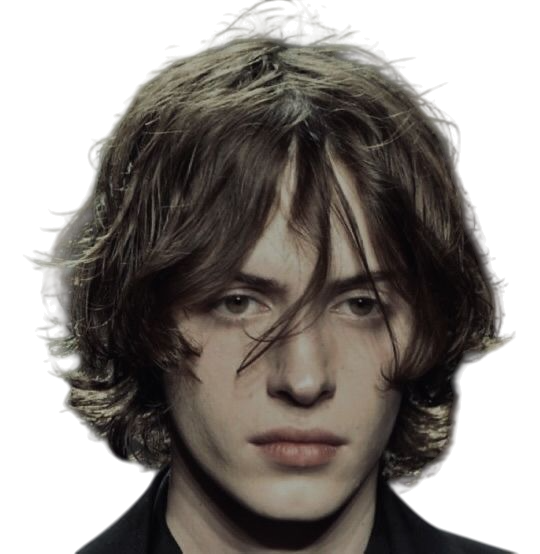
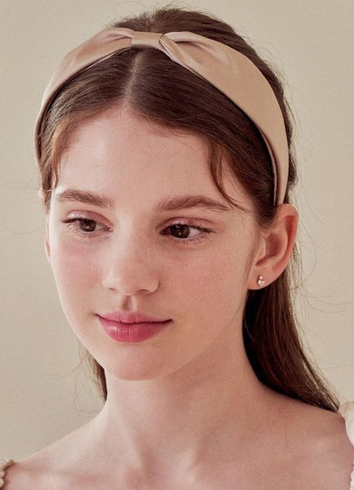
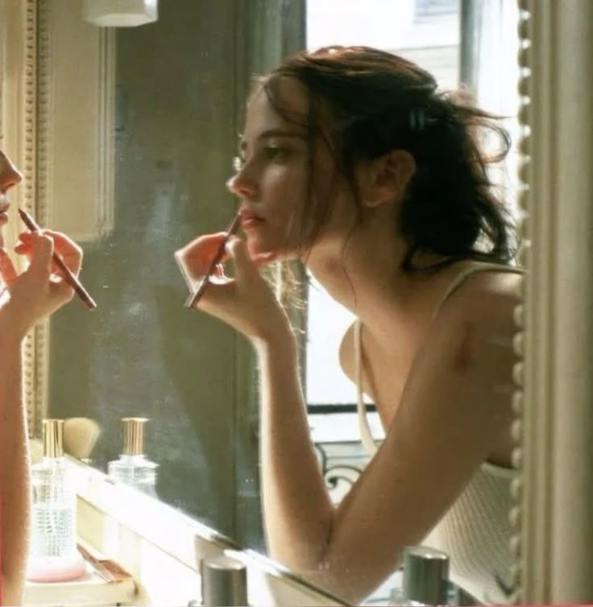
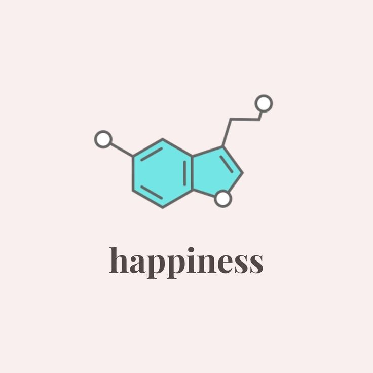
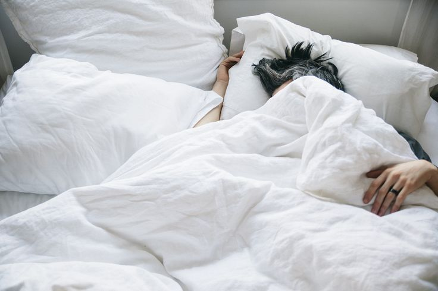
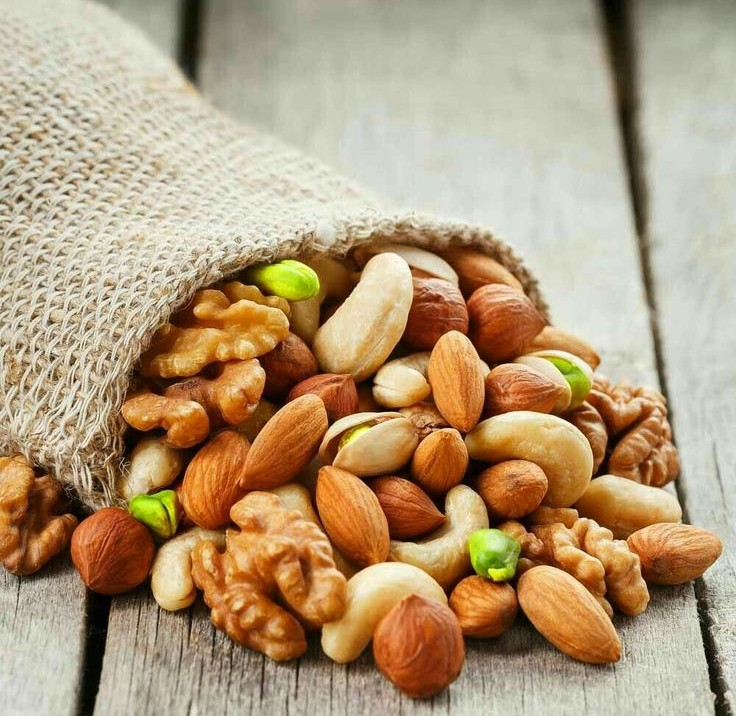

Sexual Dimorphism
What makes a face distinctly male or female?
Well, sexual dimorphism refers to the differences in appearance between males and females of the same species. In humans, facial features that exhibit dimorphism are an important pillar for attractiveness.
Masculine or feminine facial features that reflects an individual's sex increases perceived attractiveness consistently across different cultures, suggesting a universal component to these preferences.
These innate mate selection preferences are suggested to have been driven by evolution, whereby humans have evolved to prefer traits that enhance reproductive success.
Males may prefer feminine faces in females because they signal youth and fertility,
while females may prefer masculine faces in males because they signal strength and the ability to provide protection.
Health Indicator
Just like the other universal metrics for beauty (beauty concepts), sexual dimorphism also reflects health status, albeit in slightly different aspects.
Masculine facial features in males (e.g., prominent jawlines, cheekbones) are associated with higher testosterone levels, which may signal strong immune function and reproductive viability.

Similarly, feminine facial features in females (e.g., softer skin, fuller lips) are linked to higher estrogen levels, which are associated with fertility and youth.

The significant main effect for dimorphism is that masculine male/feminine female faces are more attractive than feminine male/masculine female faces. In other words, attractive, sexually dimorphic traits are shaped by optimal hormonal levels.
Dimorphic Features
Male and female faces diverge at puberty, with sexually dimorphic traits signaling sexual maturity and reproductive potential.
In males, testosterone stimulates the growth of the jaws, cheekbones, brow ridges, and facial hair, while in females, growth of these regions is inhibited by oestrogen,
which may also increase lip size.

Since females can have masculine features and men can have feminine features, there is no one feature that distinguishes the male from the
female face; it is an overall pattern enable us to recognise them apart.
These range from face shape, eye size and shape, nose size and so on.
Face Shape: The female face tends to be more oval in shape, with a slimmer jaw while the male face has a taller and more squared appearance. Male faces also have a relatively longer lower facial third.
Eyes: Males tend to have more prominent brow ridges, causing their eyes to appear more deep-set. Females tend to have rounder eyes that are larger relative to the face.
Forehead inclination: The male forehead tends to slope posteriorly (backward); the female forehead is usually more vertical.
Nose: The male nose is proportionately larger and more pronounced than the female nose. Women tend to have smaller noses with more concave
dorsal morphology in profile view.
Chin: In frontal view, the male chin is broader with a more
square shape; female chins tend to be rounded and narrow.
The female ‘jaw line’ tends to have a gentler curve from the ear
region to the chin whereas the male gonial region is more angular (i.e. jaw angle is more pronounced and less rounded).
Cheekbones: Female cheekbones are less prominent (actual depth) but may appear more prominent (perceived depth) due to reduced projection of the surrounding areas.
Eyebrows: Male eyebrows tend to be horizontally straight, relatively thick and positioned lower. Female eyebrows are generally higher and usually shaped as a gentle arc.
Femininity & Attractiveness
Female beauty enthusiasts tend to enhance their own feminine features, particularly through the use of makeup around the eyes.
Indeed, higher levels of perceived feminine characteristics in women's faces are associated with higher perceived attractiveness, as evidenced by previous studies that used non-manipulated women's faces, manipulated composite female facial stimuli and even manipulated individual women's faces.

Although thicker, more masculine eyebrows, and more robust jawlines have been trending among influencers and models, especially in Western cultures, many of these faces retain a high degree of femininity. Feminine features are undeniably associated with attractiveness in women across cultures by both men and women.
Often, women seek to enhance facial femininity by attaining arched eyebrows through grooming and larger, rounded eyes through makeup, in order to look prettier.
Masculinity & Attractiveness
You may think an increasingly masculine face is naturally more attractive face.
However, this relationship is more complex and not strictly linear, as attractiveness appears to peak at a balance where certain masculine characteristics are present but not exaggerated.
Some studies report preferences for less masculine features in men's faces,
while others show preferences for more masculine features.
These results reveal that moderate levels of masculine traits—such as a strong jawline, facial hair, and broader shoulders—are often perceived as attractive, but excessive masculinity
(e.g. extreme muscularity, pronounced baldness)
can reduce perceived attractiveness.

Certain features when exaggerated may be a turnoff when they become 'too masculine'. Instead, having a touch of feminine features within a masculine face may be more appealing. For instance, females prefer smaller feminised noses over larger, more masculine noses in men.

Degree of masculinity (digitally manipulated) %
Attractiveness in men peaks at an optimal balance of masculine traits, beyond which further masculinization may detract from overall appeal. Hence, for men, a mix of masculine and feminine features enhances facial attractiveness.

With reference to the photo on top, the presence of a strong jawline (masculine) and prominent brow ridge (masculine), coupled with a slim nose (feminine) enhances facial aesthetics.
Even within attractive figures and models who have an overall masculine appearance, the masculine traits present are not overly exaggerated and tend to be coupled
less noticeable feminine features that strike the right balance for facial aesthetics. They can come in the form of long luscious hair, softer eyes and more.

The above face has a masculine look, attributed to his tall, broad face, wide jaw, and small, masculine eyes. But the long eyelashes around his eyes, being a more conventionally feminine feature, creates contrast. Rather than having an 'M-shaped hairline', he has a straight, youthful one, contributing to his conventionally handsome appearance.
The relationship between femininity and female facial attractiveness seems linear. For the relationship between masculinity and male facial attractiveness, why is this not the case?
Masculine traits are displayed in men with a strong immune system, as high testosterone compromises immunity, and only those with a robust immune system can afford these traits.
Besides, they are also associated with higher ability to acquire resources for survival through competition.
Masculine facial features signify greater health and mate quality, hence enhancing attractiveness.
High testosterone linked to risks of aggression
However, a tradeoff arises from masculine male partners.
The risk of testosterone-associated antisocial behaviours,
higher divorce probability
and low partner fidelity,
which may all have a negative impact on parental investment.
These conclusions drawn from research are used to explain the basis for what makes a male face handsome.
Glowing Up
Dimorphic features play a role in facial aesthetics, they make a man look distinctly male and a women look distinctly female. So, how does one enhance gender-specific traits to look better?

Dimorphic features are the result of hormone-based development of secondary sexual characteristics and fertility. Having a dimorphic face is intertwined with one's actions, especially during developmental years. It comes as no surprise that powerlifters tend to have wider jaws. and females who enter the kickboxing industry look more masculine over time.

Lifestyle factors such as diet, exercise, sleep, and stress management can optimize hormonal levels, influencing the development of sexually dimorphic features. For instance, a diet rich in healthy fats and proteins supports testosterone production, while regular strength training enhances muscle growth and bone density. Adequate sleep and stress reduction through mindfulness or relaxation techniques can also stabilize cortisol levels, promoting optimal hormone balance.

To optimise health and appearance, the focus should be on natural lifestyle changes. For isntance, obsession-driven habits such as intensive chewing exercises may overdevelop one's jaw muscles, making the jaw too wide and masculine, while steroid usage can increase testosterone in the short term but result in baldness.

Instead, one can opt to alter his or her diet with hard foods such as nuts for jaw definition, as well as proper nutrition to support the formation of hormones within the body among many other grooming techniques and lifestyle changes that can be implemented.
Here, we will provide you more extensive and comprehensive information for your glowup journey.
Glowing up is about small enhancements, but big results!
Learn More under the How to Glow Up section